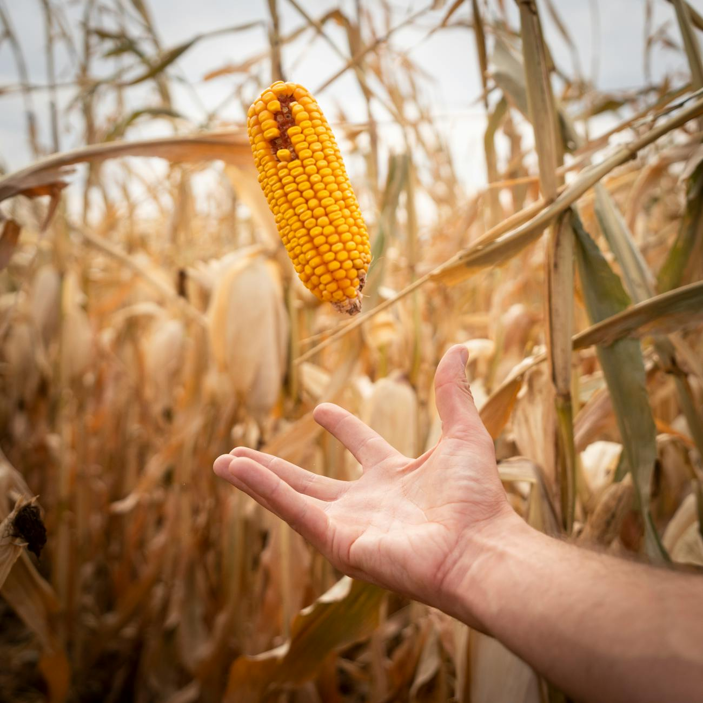

Hecha de maíz
Nuestra arena está hecha de maíz y es fabricada en Medellín Colombia
En Biocat, cuídamos a tú gato y al planeta con nuestra arena biodegradable de maíz
Nuestra arena a parte de biodegradable no genera polvo por lo que es muy fácil de limpiar
Nuestra arena está hecha de maíz y es fabricada en Medellín Colombia
Al ser hecha de maíz es agradable con el medio ambiente
Nuestra arena además tiene olor por lo que tú gato la amará
Somos una empresa familiar fundada en Medellín, Colombia, en 2012, dedicada a crear una arena para gatos 100 % natural, elaborada a base de maíz. Nuestra fórmula es biodegradable, aglomerante y libre de polvo, ofreciendo una experiencia más limpia tanto para tu mascota como para tu hogar. Con Biocat, eliges un producto ecológico, innovador y hecho con amor desde Colombia.
Michueco es un gato juguetón, curioso y lleno de energía. Es el corazón, el espíritu y el logotipo de nuestra marca, símbolo de la alegría y el cariño que sentimos por los gatos. A través de él, reflejamos los valores que nos inspiran: diversión, cuidado y amor por cada mascota.

Y muy pronto nos pondremos en contacto contigo